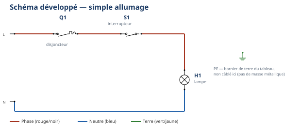
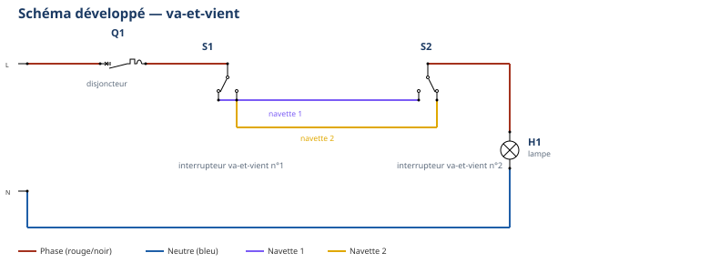

Thème / DomaineÉlectricité simple et cycle frigorifique — les bases
Évaluation sommativeÉ1 — semaine 7 — clôture du bloc S1-S2
SéquencesS1 · S2 · sem. 7, dates à caler
Nom________________
Prénom________________
Date________________
Positionnement01234
Contexte professionnel
Vous voici à la 7e semaine de votre première année de formation. Ordre d'intervention
n° OI-2026-EVAL-S1S2-01 : comme dans toute entreprise sérieuse, votre atelier-école fait le point avant
d'ouvrir de nouveaux chantiers. Aujourd'hui, sur 3 postes indépendants (froid, électricité, théorie),
vous montrez seul(e) ce que vous savez déjà faire : enchaîner un façonnage cuivre complet, repérer les
organes d'une machine frigorifique réelle, câbler une installation domestique et mesurer des grandeurs
électriques, expliquer à l'écrit le cycle et les grandeurs. On évalue ce que vous avez déjà travaillé au
moins deux fois depuis la rentrée — rien de nouveau ne vous est demandé aujourd'hui.
Tâches
T6 Préparer, vérifier les matériels et outillages T8 Sécuriser son intervention sur site T10 Repérer, raccorder, assembler les réseaux fluidiques, aérauliques et électriques T11 Contrôler les circuits hors fonctionnement T12 Respecter les consignes de sécurité et protéger la zone de travail
Savoirs
S2.1 Outils, normes et représentation S5.1 Systèmes thermodynamiques à détente directe S5.6 Réseaux, matériels électriques et de régulation
Savoir-être
La sécurité EST le savoir-être aujourd'hui : EPI portés sans qu'on vous le rappelle, consignation appliquée d'elle-même, honnêteté du relevé et de l'auto-positionnement
Compétences (≤ 4) — Évaluation
ÉvaluationC3.4 Façonner, raccorder, assembler, isoler les circuits (frigorifique, hydraulique, aéraulique) ÉvaluationC3.6 Câbler, repérer, connecter les liaisons électriques et électroniques ÉvaluationC4.5 Mesurer, comparer des grandeurs
Ce qui est évalué aujourd'hui — les 3 postes
Poste
Durée
Contenu
Compétence(s) — ancrage
FROID
4 h
Enchaîner coupe → cintrage → dudgeon sur une pièce d'un seul tenant, puis repérer les 4 organes sur une machine réelle et compléter la croix
ÉvaluationC3.4 — sur T10 · S2.1
ÉLEC
4 h
Câbler un simple allumage OU un va-et-vient (tirage au sort) ; mesurer la continuité hors tension et la tension en service
ÉvaluationC3.6 — sur T10 · S5.6 (câblage) · C4.5 — sur T11 · S5.6 (mesures)
THÉORIE
2 h
Écrit individuel : croix à compléter, organes et rôles, lecture d'une plaque signalétique réelle, calculs guidés (loi d'Ohm)
appui — croise et valide les savoirs S2.1 · S5.1 · S5.6 qui portent C3.4 et C4.5
Le poste théorie ne crée pas une 4e
compétence notée : c'est un écrit qui vérifie, avec d'autres exercices, les savoirs qui soutiennent les
3 compétences pratiques ci-dessus. Seules C3.4, C3.6 et C4.5 sont remontées sur École Directe.
⏱ Consignes générales — valables pour les 3 postes
Poste individuel : vous travaillez seul(e), sans aide ni échange avec un camarade, sur chacun des 3 postes.
Chaque poste est autoportant : ce document contient tout ce qu'il faut, lisez chaque partie en entier avant d'agir.
Matériel autorisé : uniquement celui indiqué à chaque poste ; pas de note personnelle, pas de téléphone.
Toute valeur relevée doit être lue réellement sur le poste, la machine ou la plaque fournie —
aucune valeur n'est à deviner ni à recopier d'un camarade.
En cas de doute de sécurité, levez la main et attendez le professeur avant d'agir.
Vous complétez votre auto-positionnement honnêtement, avant que le professeur ne corrige (feuille finale).
POSTE FROID — partie A : façonnage enchaîné sur une pièce d'un seul tenant
C3.4 sur T10 · S2.1 — Évaluation≈ 35 min
Vous avez déjà coupé, cintré et dudgeonné du tube cuivre à plusieurs reprises depuis
la rentrée (S1-F1, puis S2-F1). Aujourd'hui, vous réalisez les 3 gestes à la suite, sur une seule et même
longueur de tube, sans repartir d'un tube neuf à chaque geste : c'est le passage à l'aisance.
Matériel autorisé pour cette partie
1 longueur de tube cuivre recuit, d'un seul tenant (diamètre et longueur selon le stock de l'atelier, à faire valider par le professeur)
Coupe-tube, ébavureur
Ressort à cintrer adapté au diamètre du tube
Dudgeonnière avec mors adapté + écrou et raccord mâle pour vérifier l'emboîtement
Mètre ou réglet, feutre marqueur
Gants anti-coupure et lunettes de protection (obligatoires)
⚠ Rappel sécurité — gants anti-coupure et lunettes portés avant tout outil ;
jamais de scie à métaux sur le cuivre ; un seul outil en main à la fois ; chaque outil retourne à sa place après
usage. 🚨 En cas d'incident : arrêtez le poste, alertez le professeur ; en cas de coupure,
désinfectez immédiatement (le cuivre s'infecte vite) — trousse de secours et arrêt d'urgence localisés dès
l'entrée dans l'atelier.
Étapes à réaliser, dans l'ordre, sans repartir d'un tube neuf
☐ 1. Mesurer et tracer au feutre la longueur totale demandée par le professeur (elle comprend la portion qui sera cintrée et la portion qui sera dudgeonnée)
☐ 2. Couper le tube au coupe-tube (au moins 8 tours), puis ébavurer les deux extrémités
☐ 3. Enfiler l'écrou sur le tube avant le dudgeon et avant le cintrage (sinon il ne pourra plus passer le coude)
☐ 4. Cintrer au ressort, à l'endroit tracé, jusqu'à l'angle demandé par le professeur, en respectant le rayon minimum (3 fois le diamètre du tube)
☐ 5. Réaliser le dudgeon à l'extrémité indiquée, sans forcer au-delà de la butée de la dudgeonnière
☐ 6. Visser l'écrou sur le raccord mâle pour vérifier l'emboîtement du dudgeon
Cadre de dessin — reportez ici le croquis coté de votre pièce enchaînée (longueur, angle, emplacement du dudgeon)
Auto-contrôle de la pièce enchaînée
Critère observable
Constat
Longueur totale conforme à la cote demandée
☐ Oui ☐ Non
Coupe nette, ébavurée aux deux extrémités
☐ Oui ☐ Non
Cintrage sans pincement, angle demandé respecté, rayon minimum tenu
☐ Oui ☐ Non
Dudgeon régulier, sans fente, écrou emboîté correctement
☐ Oui ☐ Non
Les 3 gestes réalisés à la suite, sur la même pièce, sans interruption ni tube de secours
☐ Oui ☐ Non
Si une case est cochée « Non », signalez-le
vous-même au professeur avant le contrôle final : l'honnêteté de l'auto-contrôle fait partie du savoir-être évalué.
POSTE FROID — partie B : repérer les 4 organes sur la machine et compléter la croix
C3.4 sur T10 · S2.1 — Évaluation≈ 20 min
Une machine frigorifique du parc TP est en fonctionnement, préparée par le
professeur, comme en S1-F2 et S2-F2. Vous touchez uniquement sur autorisation du professeur, avec les
gants de protection thermique fournis, pour repérer les 4 organes, puis vous transposez ce que vous observez
sur la croix du frigoriste.
⚠ Rappel sécurité — gants de protection thermique obligatoires pour tout
contact ; ne jamais toucher une surface sans l'autorisation du professeur ; ne jamais approcher les doigts d'un
ventilateur en mouvement ; rester à la distance indiquée pendant l'écoute du compresseur. 🚨 En cas
d'incident : en cas de brûlure légère, refroidir sous le point d'eau localisé puis prévenir le professeur ;
ne jamais déplacer un camarade blessé sans certitude sur son état.
Tableau d'observation — chaud ou froid ?
Ce que je touche ou observe
Chaud, tiède ou froid ?
Organe (mon hypothèse)
Le gros tuyau qui sort de l'organe le plus bruyant
L'organe où l'air soufflé sort (avec le ventilateur)
Le petit tuyau fin entre les deux organes
Le tuyau qui revient vers l'organe le plus bruyant
Je complète la croix du frigoriste — d'après mon repérage sur la machine
Respectez la convention absolue vue depuis la semaine 1 : détendeur à GAUCHE ·
compresseur à DROITE · condenseur en HAUT · évaporateur en BAS. Nommez chaque organe, indiquez le côté
HP (haute pression) et le côté BP (basse pression), et tracez la flèche de circulation du fluide.
Utilisez ce schéma comme repère de convention ; complétez votre propre croix dans le cadre ci-dessous d'après VOTRE observation du jour.
Ma croix du jour — 4 organes nommés, HP/BP indiqués, flèche de circulation
Question — Un camarade vous dit : « Sur la vraie machine, le condenseur
n'est pas forcément en haut. » A-t-il raison ? Expliquez avec vos mots.
Auto-contrôle du repérage
Critère observable
Constat
Les 4 organes sont nommés, sans confusion entre chaud et froid
☐ Oui ☐ Non
La convention (gauche/droite/haut/bas) est respectée sur ma croix
☐ Oui ☐ Non
HP et BP sont indiqués, la flèche de circulation est cohérente
C3.6 sur T10 · S5.6 (câblage) — ÉvaluationC4.5 sur T11 · S5.6 (mesures) — Évaluation≈ 4 h
🎲 Tirage au sort — quel montage allez-vous câbler ?
En arrivant au poste, vous tirez un ticket : il indique Variante A — simple allumage ou
Variante B — va-et-vient. Peu importe le tirage : la méthode, le temps accordé et
l'exigence de résultat sont identiques pour les deux variantes. Ne complétez que la variante que vous
avez tirée ; l'autre ne vous concerne pas aujourd'hui.
Méthode commune aux deux variantes — rappel
Vous suivez exactement la méthode utilisée depuis S1-E1 : lire le schéma →
préparer la platine → câbler → CONTRÔLE HORS TENSION → mise sous tension UNIQUEMENT par le professeur →
mesurer la tension en service. Vous ne mettez jamais votre platine sous tension vous-même.
La consignation — rituel en 4 étapes (rappel NFC 18-510)
1. Couper — le disjoncteur du poste reste ouvert pendant tout le câblage.
2. Vérifier l'absence de tension (VAT) — au multimètre, position voltmètre.
3. Condamner / signaler — personne d'autre ne remet l'alimentation ; seul le professeur ferme le disjoncteur.
4. Travailler hors tension — tout le câblage et le contrôle se font disjoncteur ouvert.
⚠ Gestes interdits — jamais toucher un fil ou une platine sans avoir vérifié
l'absence de tension ; jamais câbler ou modifier une platine sous tension ; jamais mettre une platine sous
tension vous-même. 🚨 En cas d'incident : couper (arrêt d'urgence de l'atelier), alerter le
professeur, ne jamais déplacer un camarade électrisé.
Matériel autorisé (commun aux deux variantes)
Platine en bois équipée d'un rail oméga
Disjoncteur magnétothermique ou porte-fusible unipolaire Ph + N
1 interrupteur simple (variante A) ou 2 interrupteurs va-et-vient (variante B), selon votre tirage
Q1 le disjoncteur, S1 l'interrupteur, H1 la lampe. Le schéma complet figure en
annexe pleine page en fin de document : gardez-le sous les yeux pendant tout le câblage.

Étapes — variante A
☐ 1. Vérifier que la platine est hors tension (disjoncteur du poste ouvert)
☐ 2. Positionner Q1, S1 et le support de lampe H1 selon le schéma d'implantation, fixer sans forcer
☐ 3. Raccorder la phase du bornier à Q1, puis à S1, puis à H1 ; raccorder le neutre directement à H1
☐ 4. Vérifier que chaque connexion est bien serrée et conforme au schéma et aux couleurs
Q1 le disjoncteur, S1 et S2 les deux interrupteurs va-et-vient reliés par 2 navettes,
H1 la lampe. Le schéma complet figure en annexe pleine page en fin de document.

Étapes — variante B
☐ 1. Vérifier que la platine est hors tension (disjoncteur du poste ouvert)
☐ 2. Positionner Q1, S1, S2 et le support de lampe H1 selon le schéma d'implantation, fixer sans forcer
☐ 3. Raccorder la phase du bornier à Q1, puis à la borne commune de S1
☐ 4. Raccorder les deux navettes entre S1 et S2 (bornes de contact, pas la commune)
☐ 5. Raccorder la borne commune de S2 à H1 ; raccorder le neutre directement à H1
☐ 6. Vérifier que chaque connexion est bien serrée et conforme au schéma
Contrôle hors tension — variante B
Position de S1 / S2
Valeur attendue
Valeur mesurée
Conforme ?
S1 et S2 en positions « alignées » (circuit fermé)
proche de 0 Ω
☐ Oui ☐ Non
S1 et S2 en positions « opposées » (circuit ouvert)
résistance infinie
☐ Oui ☐ Non
Si le résultat ne correspond pas à celui
attendu, ne forcez pas un branchement : signalez l'écart au professeur, c'est souvent une navette inversée.
Mise sous tension — uniquement par le professeur — puis mesure de tension en service
C4.5 sur T11 · S5.6 — Évaluation≈ 15 min
Une fois votre contrôle hors tension terminé et conforme, appelez le
professeur. C'est lui, et lui seul, qui ferme le disjoncteur. Vous mesurez alors la tension au multimètre,
position voltmètre, cordons branchés en parallèle, sans toucher les parties métalliques nues.
Point de mesure (votre variante)
Tension lue (V)
Entre phase et neutre, en amont de votre/vos interrupteur(s)
Aux bornes de la lampe H1, lampe allumée
Aux bornes de la lampe H1, lampe éteinte
Repère : la tension nominale du secteur
français entre phase et neutre est de 230 V (valeur normative) ; la valeur exacte lue sur votre poste est à
faire confirmer par le professeur.
Question — La tension aux bornes de la lampe est nulle quand elle est
éteinte, alors qu'elle ne l'est pas juste avant votre/vos interrupteur(s). Expliquez pourquoi, avec vos mots.
Rangement
☐ 1. Remettre la platine hors tension (disjoncteur ouvert, débranché)
☐ 2. Ranger les fils sans les plier de façon serrée, ranger l'outillage à son emplacement
☐ 3. Vérifier que le poste est propre et dégagé pour l'élève suivant
Cet écrit reprend, sous une autre forme, les exercices déjà travaillés en S1-T1,
S1-T2 et S2-T1. Vous répondez seul(e), sans note ni téléphone, calculatrice simple autorisée.
Exercice 1 — compléter la croix (les 4 branches sont déjà tracées)
Sur le schéma ci-dessus, écrivez dans chaque case : le nom de l'organe, puis
indiquez avec une accolade le côté HP et le côté BP, et tracez la flèche de circulation du
fluide en boucle fermée.
Exercice 2 — texte à trous : le trajet du fluide
Complétez ce texte avec les mots qui manquent (organes, états, mots de liaison) :
« Le fluide sort du _______________ à l'état de gaz chaud et sous haute pression. Il traverse le
_______________, qui le refroidit jusqu'à ce qu'il devienne _______________. Le fluide liquide traverse ensuite
le _______________, qui fait chuter sa _______________. Il arrive enfin dans l'_______________, où il
_______________ la chaleur du milieu et redevient _______________. Le cycle recommence alors sans arrêt. »
Question — Parmi les 4 organes, lequel est le seul à ne recevoir
aucun apport d'énergie mécanique (il ne fait que ralentir le fluide) ?
Voici la plaque signalétique d'une unité intérieure de climatiseur (D'après :
plaque signalétique Mitsubishi Electric MSC-GA35VB, photo, dossier S2). Relevez les valeurs demandées.
Grandeur à relever
Valeur lue
Tension (Voltage)
Fréquence
Intensité (Current)
Puissance absorbée (Input)
Fluide frigorigène
Exercice 4 — calcul guidé : la loi d'Ohm
La loi d'Ohm relie les 3 grandeurs vues en S1-T2 : U = R × I.
Question a — À partir des deux valeurs relevées sur la plaque ci-dessus
(tension U et intensité I), calculez la résistance équivalente R = U ÷ I que présenterait l'appareil
s'il se comportait comme une résistance pure. Détaillez votre calcul.
Attention : un compresseur
n'est jamais vraiment une résistance pure (c'est un moteur) — cet exercice entraîne seulement l'usage de la
formule avec des valeurs réelles, comme en S1-T2.
Question b — Rappel de S1-T2 : un enroulement de moteur mesuré au
multimètre affichait R = 7,3 Ω (D'après : TP 04 – multimètre, correction). Quelle formule utiliseriez-vous
pour calculer l'intensité I si vous connaissiez la tension U appliquée à ses bornes ? (Donnez la formule, sans
chercher un résultat chiffré.)
Positionnez-vous honnêtement AVANT que le
professeur ne corrige : l'écart entre votre auto-positionnement et la correction fait partie de l'observation
du savoir-être.
Visa professeur : ________________ Heure de fin : ________________
Documents à remettre
Ce sujet complété (3 postes : tableaux, croix, câblage contrôlé, écrit théorie, auto-positionnement)
La pièce cuivre enchaînée (poste froid) et la platine câblée (poste élec), contrôlées par le professeur
D'après : Activité n°1 TUBES
CUIVRE + correction, Activité n°5 CINTRAGES, TP n°1 Emboiture, TP n°2 Dudgeon, Tube cuivre.pdf / Tube cuivre2.pdf
(F. Cabeza) — documents S1-F1 ; Dossier 1 Progression annuelle CAP IFCA sécurité, eval croix du frigo — documents
S1-F2 et S1-T1 ; TP 4 électricité domestique CAP, TP 01 circuit électrique domestique, TP simple allumage —
documents S1-E1 ; TP 04 multimètre + correction, Exercice 01/02 S4-Électricité — documents S1-E2 et S1-T2 ; plaque
signalétique Mitsubishi Electric MSC-GA35VB (photo, dossier S2) ; Evaluation_CCF_EP1_Cintrage et Sujet CCF2021 EP2
FACONNAGE/electrique (F. Henninot, forme simplifiée pour une 1re évaluation de 1re année).